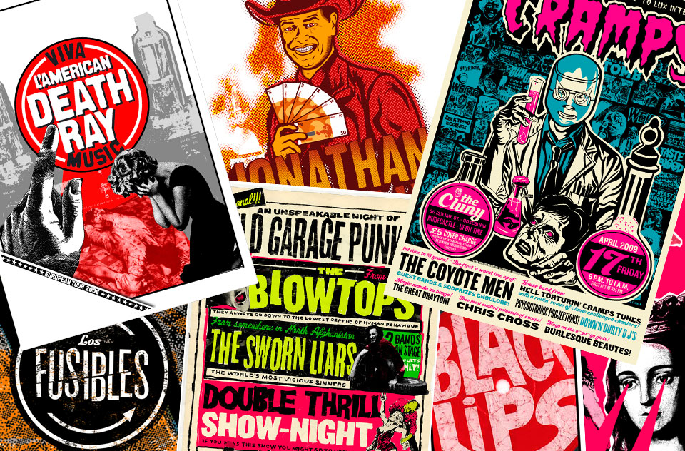

GigPosters
It's only R'n'R but they need posters
It started when we needed posters to promote my band shows, I always liked collages and enjoyed a lot to create 'low-fi' posters with no client in mind, just for the sake of exploring new techniques and ideas.
Best things in life ain't free
Time passed and i met band promoters that also needed posters, I was a friend and budget in that kind of rock tours is very low so I designed the posters for very little money, but they gave me freedom to do my thing.
I enjoyed this jobs and they taught me a lot about working with limited budget and time. Posters were normally printed with two inks and I came up with a half A2 format that allowed us to get two posters for the price of one, it fit on the doors of the bars where they were hanged, and made them stand out from the rest of the posters.
Fame and fortune
I worked for some really good bands like the Black Lips, Natural Kicks or the Coyote Men and it led me to several international expositions of my posters, and some LP sleeve designs